A small decision with a big impact
Residents shouldn't find out halfway through a booking that their address doesn't qualify.
I put the address check first, so eligibility, limits, and rules are clear before anyone picks an item or a date.
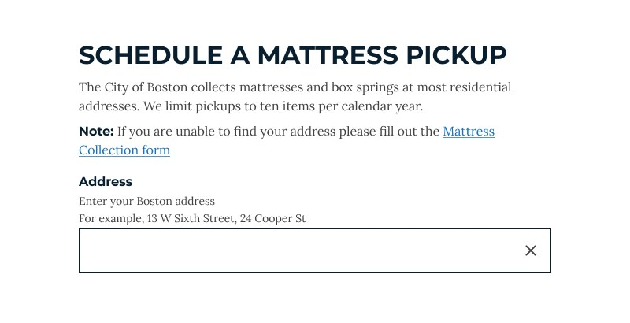
The City of Boston offers residents scheduled pickups for mattresses and bulky items such as appliances. The existing scheduling tool was built into the City's legacy 311 system: residents could book online, but couldn't cancel or reschedule, and the rules behind available dates were invisible.
As the only designer on the team, I led the end-to-end design of a new scheduling experience on Boston.gov, from discovery through a citywide launch in 2023, working with a project manager, two engineers, and Department of Sanitation and policy stakeholders.
The problem
Booking a pickup was possible. Managing one wasn't.
For residents
- There was no way to cancel or reschedule an appointment online.
- Available dates depended on rules tied to each address and the City's pickup schedule, rules residents couldn't see.
- Mattress pickups had a long backlog, with the next available date often more than a month away.
For the Department of Sanitation
- Contractors sometimes arrived at an address to find no items out for pickup.
- Reporting on missed pickups was inconsistent.
- Staff had limited visibility into scheduling and collection status.
This project focused on the resident experience. Staff reporting is handled in a separate internal tool.
The design challenge
How might we give residents more control over specialty waste pickups while making the service more reliable and easier for the City to manage?
Mapping the service
Understanding the system behind every pickup.
Before designing screens, I mapped the end-to-end service and facilitated a service blueprint session with a developer. The blueprint connects what residents do (learning about the service, scheduling, preparing for pickup) with what happens behind the scenes: staff actions, contractors, databases, and the policies that shape each step.
I also worked directly with Department of Sanitation staff to understand operational requirements, recurring problems, and the rules behind the service.
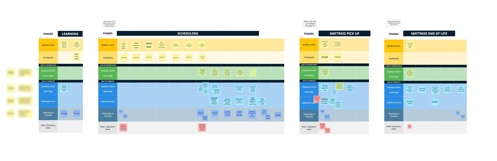

What we uncovered
The takeaway: a better booking form alone wouldn't fix the service. The experience had to reflect the scheduling rules and operational realities behind every pickup.
User flow
One clear path, with honest exits.
The flow starts with an address check. Residents whose address doesn't qualify find out immediately, with an explanation. Everyone else moves through four steps, can go back to edit any of them, and can cancel later from their confirmation.
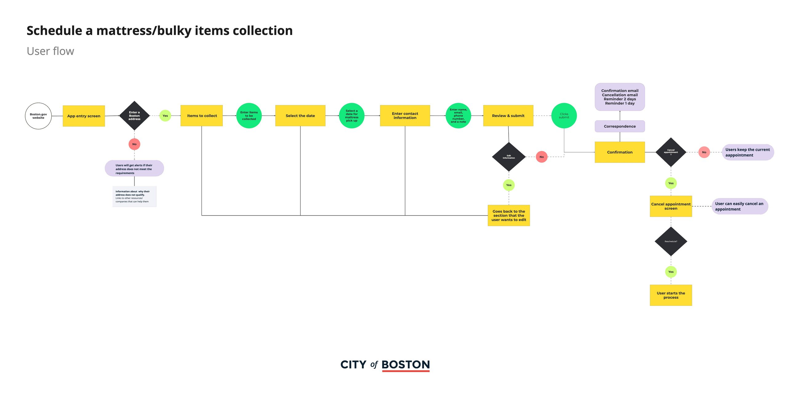

Key design decisions
Address first
Checking eligibility up front means residents only see services and dates that actually apply to them.
Rules where they matter
The ten-item yearly limit, the curb-timing rule, and the condition of items appear at the exact step where they affect a decision.
Only available dates
The calendar highlights the dates residents can actually book, so nobody picks a date that will be rejected.
Control after booking
A confirmation code, reminder emails, and a Cancel appointment link let residents change their plans without calling.
Wireframes
Two flows: booking and canceling.
I translated the flow into wireframes for both journeys: booking (Flow 1) and canceling (Flow 2). Dedicated "limitations" screens explain to residents why their address doesn't qualify, instead of leaving them at a dead end.
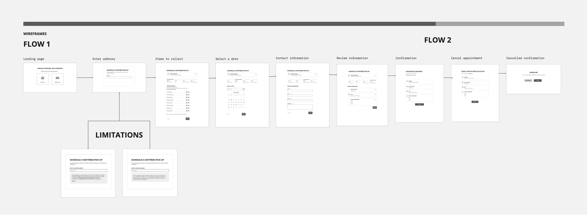

Usability testing
Testing both flows with residents.
I facilitated usability testing with 8 participants for each workflow, booking and canceling, and reviewed the experience with internal stakeholders to validate policy and operational requirements.
Find the right service
Enter an address and understand what's eligible.
Book a pickup
Choose items, pick a date, and submit.
Manage it
Understand the confirmation, then cancel or reschedule.
What we learned and changed
Unavailable dates needed explaining
I clarified date-selection behavior so residents understand why only some dates are offered.
Managing an appointment had to be obvious
I simplified the cancel and reschedule interactions and made them easy to find from the confirmation.
Preparation instructions were easy to miss
The curb-timing rule now appears on the date step, the review step, and the confirmation.
Rules needed plain language
I improved helper text and inline explanations for eligibility, limits, and the condition of items.
The final experience
Online booking, in four clear steps.
01
Start with an address
Residents enter their Boston address first. The page explains the service and its ten-item yearly limit, and offers a form for anyone whose address can't be found.
02
Choose items, with the rules in view
A four-step tracker shows progress. Residents add items with simple counters, see the yearly limit right above them, and confirm the items are in good condition before continuing.

03
Pick a date that's actually available
Only bookable dates are highlighted. A note above the calendar explains when to put items out: after 5 p.m. the night before, and before 6 a.m. on pickup day.

04
Review everything, and edit safely
The review step shows every answer with its own Edit link. Changing the address restarts the booking, so a warning explains that first, instead of silently erasing what the resident entered.

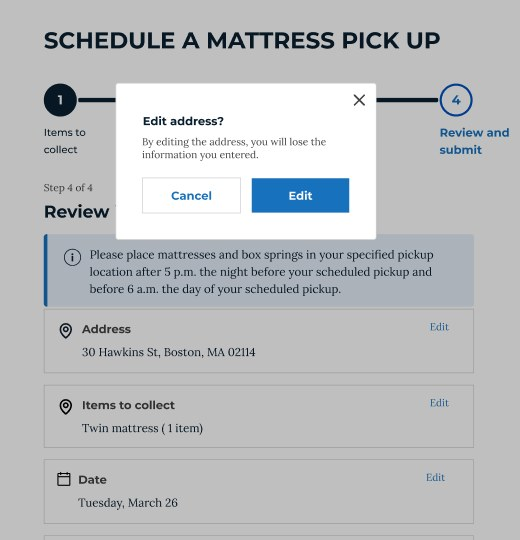
05
Confirmation, then control
Residents get a confirmation code, a confirmation email, and reminders before pickup. If plans change, they can cancel from the confirmation, confirm their choice, and reschedule right away.
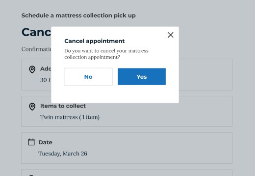
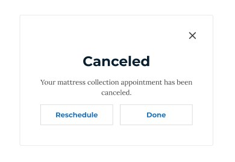
06
Designed for phones and every resident
Most residents book from their phones. On mobile, the same steps stack into a single column with a compact progress bar and full-width buttons. The experience meets WCAG 2.1 AA, and residents can switch languages from any step.
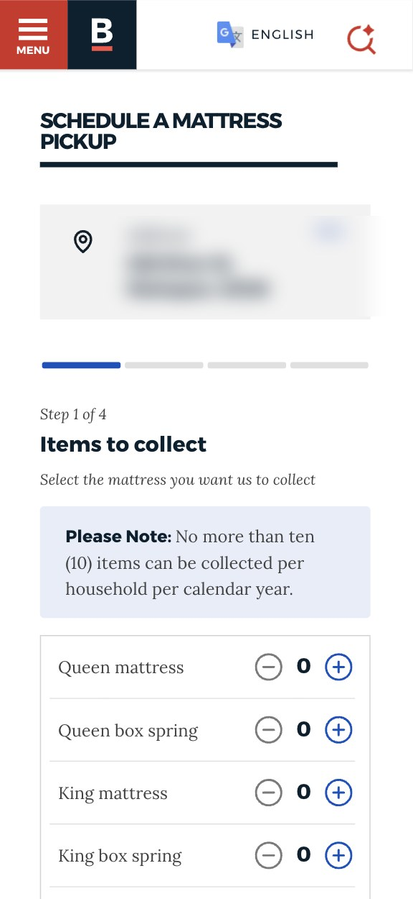
Choose items
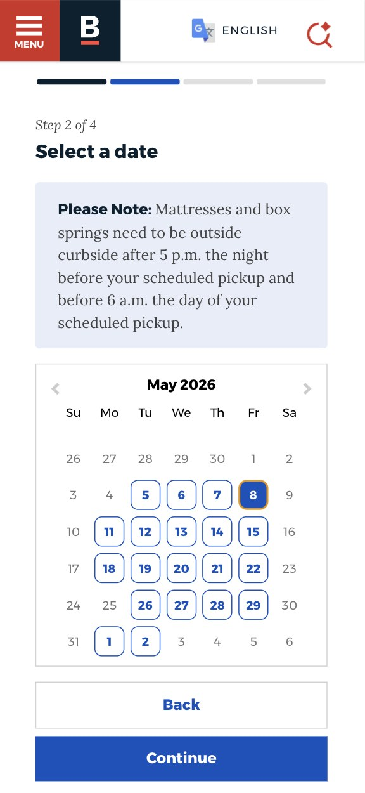
Pick a date
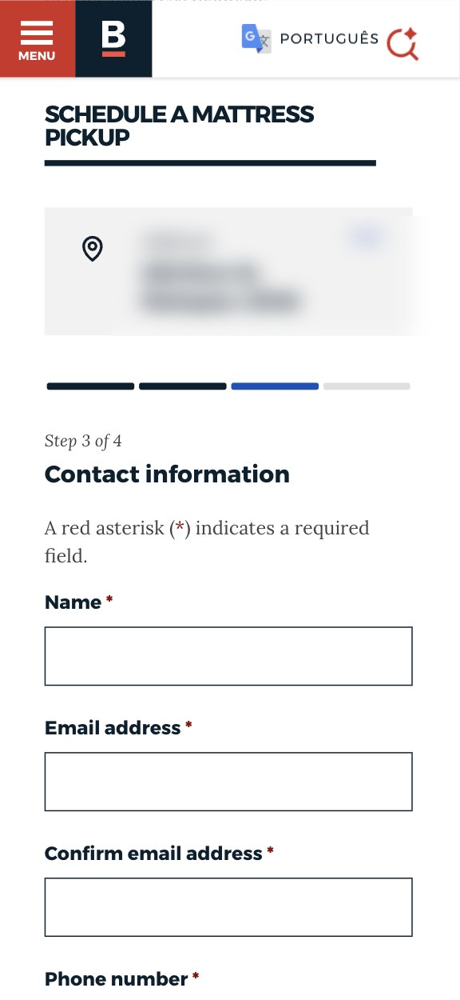
Add contact details
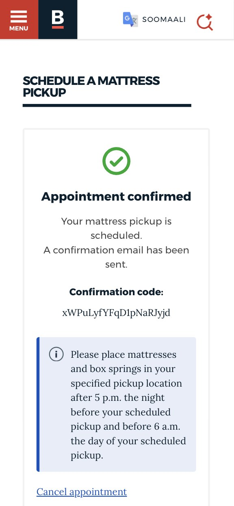
Get a confirmation
Built to scale
One pattern, three City services.
I designed the flow as a reusable pattern rather than a one-off form. The same steps, components, and logic now power more than mattress pickups.
Bulky-item pickup
Uses the identical workflow. Only the items on the first step change, from mattress sizes to appliances and other large items.
Recycling cart requests
At the end of 2025, I designed a new service for requesting recycling carts by reusing the same components and logic, adapted to five steps. It's now live on Boston.gov.
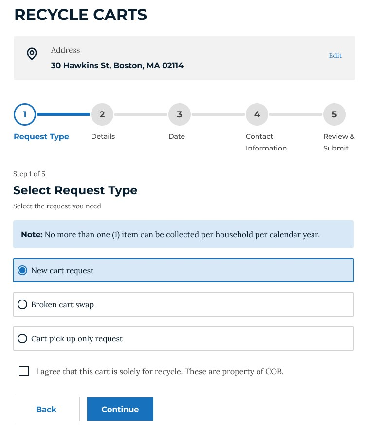
Same pattern, new request types
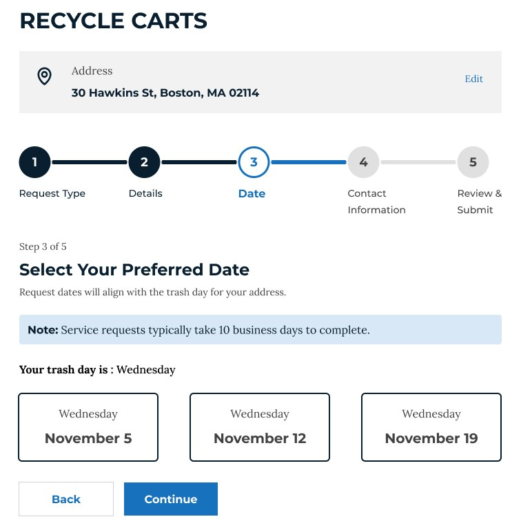
Dates follow the trash day
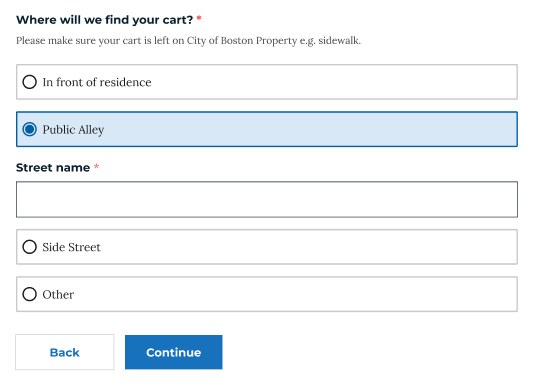
Fields appear only when needed
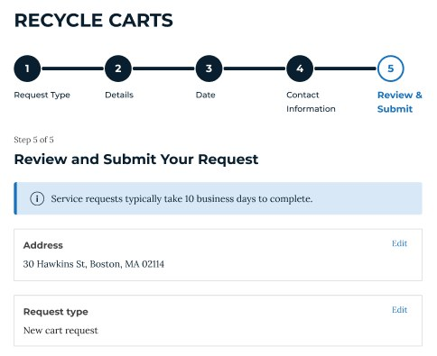
The same review step, reused
The result
A citywide self-service pattern.
- 111,859
bookings since launch across mattress, bulky-item, and recycling cart services.
- 46,180
bookings in 2026 so far.
- Control after booking
Residents can cancel and reschedule pickups online, without calling.
- Built for everyone
Responsive, WCAG 2.1 AA, and available in 10 languages. Residents can still call 311.
What I learned
Rules belong in the interface, not behind it.
Bring operational partners in early.
The hardest problems, such as missed pickups and invisible scheduling rules, weren't visible from the booking screen. Blueprinting the service with a developer and working with Sanitation staff surfaced them before I started designing.
Testing turns rules into language.
Scheduling rules made sense to the City, not to residents. Testing showed where they caused confusion and helped me translate them into explanations people could act on.
Design patterns, not just pages.
Building the flow from reusable components meant the City could launch a new service, recycling carts, without starting from scratch.
Add a channel without removing one.
Moving a service online works best when it gives people a better option, while the phone line stays open for anyone who needs it.